Les graphes
Introduction
Les graphes sont une structure de données très riche permettant de modéliser des situations variées de relations entre un ensemble d'entités comme :
- Les ordinateurs du réseau internet :
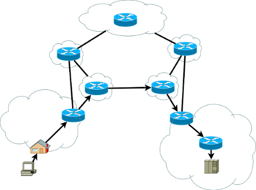
Source : Wikipedia, Mro, licence CC BY-SA 3.0
- Les personnes sur un réseau social :
Source : Pixabay
- Les villes dans un réseau routier ou de distribution :
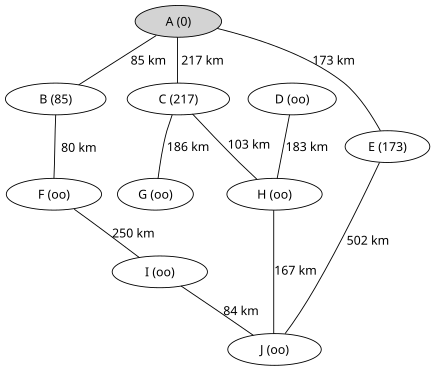
Source : Wikipedia, HB, licence CC BY-SA 3.0
- Les atomes d'une molécule :
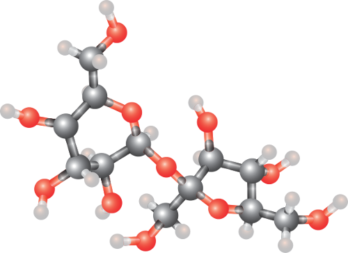
Source : Wikipedia, William Crochot, licence CC BY-SA 4.0
- Entre les ressources du Web (les relations sont les liens hypertextes).
- Entre deux situations dans un jeu.
- Etc.
Les relations peuvent être orientées ou non.
Exemple de relation orientée :
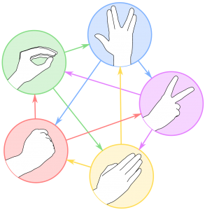
le jeu de Pierre-Papier-Ciseaux-Lezard-Spock pour représenter
la supériorité des figures les unes par rapport aux autres.
Définition et terminologie
Définition
Un graphe est constitué d'un ensemble de sommets (vertices en anglais) et :
- D'un ensemble d'arcs reliant chacun un sommet à un autre dans le cas orienté.
- D'un ensemble d'arêtes (edges en anglais) reliant deux sommets entre eux dans le cas non orienté.
Mathématiquement, un graphe \(\,G\,\) est donc un couple formé de deux ensembles :
- \(V=\{x_1, x_2, …, x_n\}\,\) dont les éléments sont les sommets.
- \(E=\{e_1, e_2, …, e_m\}\,\) dont les éléments sont les arêtes dans le cas non orienté ou les arcs dans le cas orienté.
Une arête (ou un arc) \(\,\{e_i\}\,\) est un couple de deux sommets, par exemple : \(\,e_i=(x_2,x_5)\,\) symbolise le lien (arête ou arc) entre les sommets \(\,\{x_2\}\,\) et \(\,\{x_5\}\). On peut noter \(\,G=(V,E)\).
Ordre
Le nombre de sommets d'un graphe est appelé ordre du graphe.
Terminologie des graphes non orientés
Dans le cas des graphes non orientés, les relations entre deux sommets se font dans les deux sens. On appelle ces relations des arêtes, et on a les définitions suivantes :
Sommets adjacents
Deux sommets sont adjacents s'ils sont reliés entre eux par une arête. On dit que l'arête est incidente aux deux sommets.
Voisins d'un sommet
Les voisins d'un sommet \(\,x\,\) sont tous les sommets reliés à \(\,x\,\) par une arête.
Boucle
Il peut exister des arêtes entre un sommet \(\,x\,\) et lui-même. Elles sont appelés boucles.
Degré d'un sommet
Le degré d'un sommet \(\,x\) est le nombre d’arêtes incidentes au sommet, on le note \(\,d(x)\).
Dans le cas d'une boucle incidente à un sommet, celle-ci est comptée deux fois dans l'évaluation du degré de ce sommet.
Chaîne
- Une chaîne est une séquence ordonnée d'arêtes telle que chaque arête a une extrémité en commun avec l'arête suivante.
- Le nombre d’arêtes qui composent une chaîne est appelé longueur de la chaîne.
- Une chaîne est dite élémentaire si elle ne comporte pas plusieurs fois le même sommet.
- Une chaîne est dite simple si elle ne comporte pas plusieurs fois la même arête.
- On appelle chaîne fermée toute chaîne dont l’origine et l’extrémité coïncident.
- On appelle cycle toute chaîne simple fermée (autrement dit, qui ne comporte pas plusieurs fois la même arête et dont les extrémités sont identiques).
- Si en plus la chaîne est élémentaire, on parle alors de cycle élémentaire.
Connexité
- Un graphe non orienté est dit connexe lorsqu'il existe une chaîne pour toute paire de sommets.
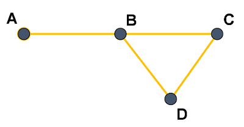
Graphe connexe
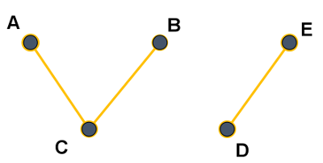
Graphe non connexe
Remarque
Intuitivement, un graphe connexe comporte un seul "morceau".
- Un graphe non orienté non connexe se décompose en composantes connexes.
Dans l'exemple du graphe non connexe précédent, les 2 composantes connexes sont \(\,\{A, B, C\}\,\) et \(\,\{D, E\}\).
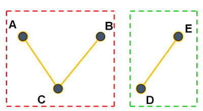
- Un graphe non orienté est dit complet si chacun de ses sommets est relié directement à tous les autres.
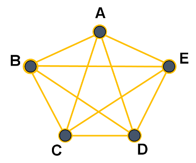
Graphe complet
Exemple
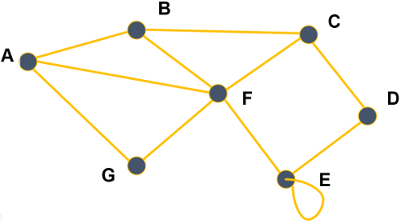
- Ce graphe non orienté est donné par :
- un ensemble de sommets : \(\,\{A, B, C, D, E, F, G\}\) ;
- un ensemble d'arêtes : \(\,\{(A, B), (A, F), (A, G), (B, C), (B, F), …\}\).
- Les sommets \(\,A\,\) et \(\,B\,\) sont adjacents mais \(\,B\,\) et \(\,D\,\) ne le sont pas.
- Les voisins du sommet \(\,A\,\) sont \(\,B, F\) et \(G\).
- Le degré du sommet \(\,A\,\) est égal à \(\,3\,\) \(\,(d(A)=3)\).
- \(A, B, C, F, B\,\) est une chaîne, sa longueur est \(\,4\).
- \(A, B, C, D\,\) est une chaîne simple, \(A, B, F\) aussi.
- \(A, B, C, F, B, A\,\) est une chaîne fermée.
- \(A, F, G, A\,\) est un cycle.
- Il y a une boucle \(\,(E,E)\).
- Le degré de \(\,E\,\) est égal à \(\,4\).
- Ce graphe est connexe mais non complet.
Terminologie des graphes orientés
Dans le cas des graphes orientés, les arêtes ont un sens et elles sont appelées arcs. Par exemple, l'arête \(\,a=(x, y)\,\) indique qu'il y a un arc d'origine \(\,x\,\) et d'extrémité finale \(\,y\).
Successeurs et prédécesseurs d'un sommet
Dans un graphe orienté, on ne parle plus de voisins d'un sommet mais de ses successeurs et de ses prédécesseurs : les successeurs d'un sommet \(\,x\,\) sont tous les sommets \(\,y\,\) tels qu'il existe un arc \(\,(x, y)\,\) (de \(\,x\,\) vers \(\,y\)) et les prédécesseurs de \(\,x\,\) sont tous les sommets \(\,w\,\) tels qu'il existe un arc \(\,(w, x)\,\) (de \(\,w\,\) vers \(\,x\)).
Chemin
Un chemin est une séquence ordonnée d'arcs consécutifs (on parlait de chaîne dans un graphe non orienté).
Circuit
Dans un graphe orienté, un circuit est une suite d'arcs consécutifs (chemin) dont les deux sommets extrémités sont identiques.
Degré d'un sommet
Cette notion existe aussi dans le cas des graphes orientés.
On distingue le degré entrant d'un sommet \(\,x\,\) (noté \(\,d_−(x)\,\) et qui correspond au nombre de prédécesseurs de \(\,x\,\)) et le degré sortant d'un sommet \(\,x\,\) (noté \(\,_+(x)\,\) et qui correspond au nombre de successeurs de \(\,x\)).
Le degré d'un sommet \(\,x\,\) vaut \(\,d(x)=d_+(x)+d_−(x)\).
Boucle
Une boucle est un arc entre un sommet et lui-même.
Forte connexité
- Un graphe orienté est dit fortement connexe lorsque pour toute paire de sommets distincts \(\,(u,v)\), il existe un chemin de \(\,u\,\) vers \(\,v\,\) et un chemin de \(\,v\,\) vers \(\,u\).
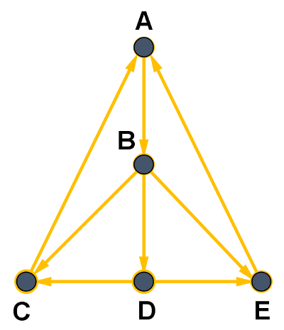
Graphe fortement connexe
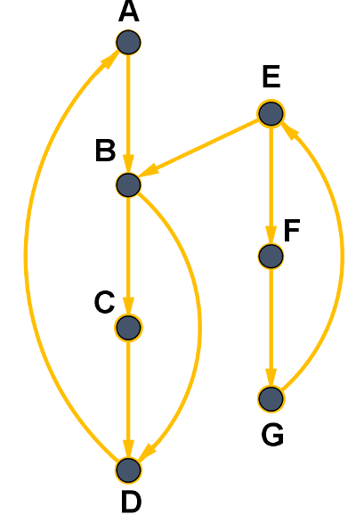
Graphe non fortement connexe
Remarque
Le sommet \(\,E\,\) n'est pas accessible depuis les sommets \(\,A\), \(\,B\), \(\,C\) ou \(\,D\).
- Un graphe orienté non fortement connexe se décompose en composantes fortement connexes.
Dans l'exemple du graphe non fortement connexe précédent, les composantes fortement connexes sont représentées en pointillés rouges et verts.
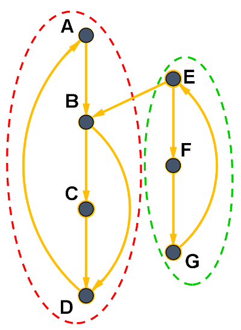
Exemple
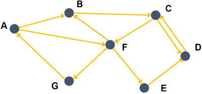
- Ce graphe orienté est donné par :
- un ensemble de sommets : \(\,\{A, B, C, D, E, F, G\}\) ;
- un ensemble d'arcs : \(\,\{(A, B), (A, F), (B, C), (C, F), (C, D), …\}\).
- Les successeurs de \(\,A\,\) sont les sommets \(\,B\,\) et \(\,F\), le seul prédécesseur de \(\,A\,\) est \(\,G\).
- Le degré du sommet \(\,A\,\) est égal à \(\,3\,\) \(\,(d(A)=d_+(A)+d_−(A)=2+1=3)\).
- \(A, B, C, D\,\) est un chemin mais \(\,A, B, F\,\) n'en est pas un car il n'y a pas d'arc \(\,(B,F)\,\) (de \(\,B\,\) vers \(\,F\)).
- \(A, F, G, A\,\) est un circuit.
- Il n'y a pas de boucle ici.
- Ce graphe est fortement connexe.
Exercice 1 ⭐
Voici deux graphes que l'on appellera respectivement \(\,G_1\,\) (celui de gauche) et \(\,G_2\,\) (celui de droite) :
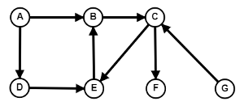
\(~~~~~~~~~\)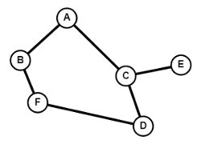
- Lequel est non orienté ?
- Pour le graphe non orienté :
- Donner deux sommets adjacents et deux sommets non adjacents.
- Donner les voisins de \(\,A\).
- Quels sont les degrés des sommets \(\,B\), \(\,C\,\) et \(\,E\,\) ?
- S'il y en a, donner un cycle de ce graphe.
- Donner toutes les chaînes simples entre les sommets \(\,A\,\) et \(\,D\).
- Pour le graphe orienté :
- Donner les successeurs et les prédécesseurs des sommets \(\,A\,\) et \(\,C\).
- S'il y en a, donner un chemin entre \(G\) et \(B\). Et entre \(\,B\,\) et \(\,D\) ?
- S'il y en a, donner un circuit de ce graphe.
- Quel est le sommet dont le degré est le plus grand ?
Graphes simples et multigraphes
Un graphe est simple si au plus une relation relie deux sommets et s'il n'y a pas de boucle.
On peut imaginer des graphes avec des boucles et/ou des relations reliant les deux mêmes sommets. On appelle ces graphes des multigraphes.
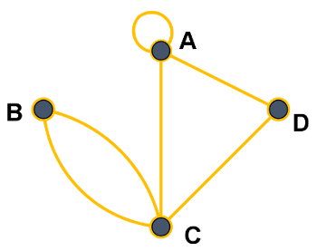
Multigraphe non orienté
Graphes valués
Certains graphes (orientés ou non) sont dits valués : on ajoute un coût (ou valuation, ou poids) à chaque arête/arc. Dans le cas d'un graphe représentant un réseau routier, le coût sur chaque arête pourrait, par exemple, être la distance entre deux villes.
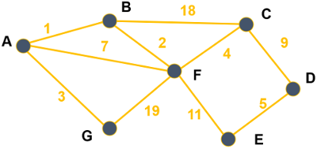
Graphe valué
Représentations d'un graphe
Représentation par matrice d'adjacence
Une matrice \(\,M\,\) est un tableau de nombres, qui peut être représenté en machine par un tableau de tableaux (ou une liste de listes) noté matrice. Chaque nombre de cette matrice est repéré par son numéro de ligne \(\,i\,\) et son numéro de colonne \(\,j\). On note ce nombre \(\,M_{i,j}\,\) et on peut y accéder par l'instruction matrice[i][j].
Un graphe à \(\,n\,\) sommets peut être représentée par une matrice d'adjacence de taille \(\,n×n\), où la valeur du coefficient d'indice \(\,i,j\,\) dépend de l'existence d'une arête ou d'un arc reliant les sommets \(\,i\,\) et \(\,j\).
Exemple 1 (graphe non orienté)
Si les sommets \(\,A, B, C, …\,\) du graphe : sont respectivement numérotés \(\,0, 1, 2, …\,\) alors sa matrice d'adjacence est :
\(M=\begin{pmatrix} 0 & 1 & 0 & 0 & 0 & 1 & 1\\1 & 0 & 1 & 0 & 0 & 1 & 0\\0 & 1 & 0 & 1 & 0 & 1 & 0\\0 & 0 & 1 & 0 & 1 & 0 & 0\\ 0 & 0 & 0 & 1 & 1 & 1 & 0\\1 & 1 & 1 & 0 & 1 & 0 & 1\\1 & 0 & 0 & 0 & 0 & 1 & 0\end{pmatrix}\)
matrice = [
[0, 1, 0, 0, 0, 1, 1],
[1, 0, 1, 0, 0, 1, 0],
[0, 1, 0, 1, 0, 1, 0],
[0, 0, 1, 0, 1, 0, 0],
[0, 0, 0, 1, 1, 1, 0],
[1, 1, 1, 0, 1, 0, 1],
[1, 0, 0, 0, 0, 1, 0]
]
Remarque
Dans le cas d'un graphe non orienté, la matrice d'adjacence est nécessairement symétrique par rapport à sa diagonale : on a \(\,M_{i,j}=M_{j,i}\).
Exemple 2 (graphe orienté)
C'est le même principe en faisant attention au sens des arcs : \(\,M_{i,j}=1\,\) s'il y a un arc d'origine \(\,i\,\) et d'extrémité \(\,j\,\) et \(\,M_{i,j}=0\,\) sinon.
Ainsi, le graphe :
a pour matrice d'adjacence :
\(M=\begin{pmatrix} 0 & 1 & 0 & 0 & 0 & 1 & 0\\0 & 0 & 1 & 0 & 0 & 0 & 0\\0 & 0 & 0 & 1 & 0 & 1 & 0\\0 & 0 & 1 & 0 & 0 & 0 & 0\\ 0 & 0 & 0 & 1 & 0 & 0 & 0\\0 & 1 & 0 & 0 & 1 & 0 & 1\\1 & 0 & 0 & 0 & 0 & 0 & 0\end{pmatrix}\)
Remarque
Comme les arcs ont un sens, la matrice d'adjacence d'un graphe orienté n'est généralement pas symétrique.
Représentation par listes des successeurs
Une autre façon de représenter un graphe est d'associer à chaque sommet la liste des sommets auxquels il est relié. Dans le cas d'un graphe orienté, on parle de liste de successeurs, alors que dans le cas d'un graphe non orienté on parle de liste de voisins. Une façon simple et efficace est d'utiliser un dictionnaire où chaque sommet est associé à la liste de ses successeurs/voisins.
Exemple 3 (graphe non orienté)
Le graphe non orienté : peut être représenté par le dictionnaire suivant, où les clés sont les sommets et les valeurs sont les listes de voisins :
dico1 = {
"A": ["B", "F", "G"],
"B": ["A", "C", "F"],
"C": ["B", "D", "F"],
"D": ["C", "E"],
"E": ["D", "E", "F"],
"F": ["A", "B", "C", "E", "G"],
"G": ["A", "F"]
}
Exemple 4 (graphe orienté)
Le graphe orienté : peut être représenté par le dictionnaire suivant, où les clés sont les sommets et les valeurs sont les listes de successeurs :
dico2 = {
"A": ["B", "F"],
"B": ["C"],
"C": ["D", "F"],
"D": ["C"],
"E": ["D"],
"F": ["B", "E", "G"],
"G": ["A"]
}
Exercice 2 ⭐
On reprend les deux graphes \(\,G_1\,\) et \(\,G_2\,\) de l'exercice 1.
- Donner la matrice d'adjacence de chacun de ces graphes (on prendra les indices des sommets dans l'ordre alphabétique).
- Donner la représentation de chacun des deux graphes sous la forme d'un dictionnaire de liste de successeurs.
- On considère les deux graphes \(\,G_3\,\) et \(\,G_4\,\) représentés ci-dessous :
note
Dans les deux cas, on notera les sommets \(\,A, B, C, D...\)
- On considère les deux graphes \(\,G_5\,\) et \(\,G_6\,\) représentés ci-dessous respectivement à gauche et à droite :
| Sommet | Listes des prédécesseurs |
|---|---|
| \(A\) | \((E, F)\) |
| \(B\) | \(\emptyset\) |
| \(C\) | \((A, F)\) |
| \(D\) | \((D, F)\) |
| \(E\) | \(\emptyset\) |
| \(F\) | \((B, C)\) |
| Sommet | Listes des voisins |
|---|---|
| \(A\) | \((C, D, E)\) |
| \(B\) | \((C, D, E)\) |
| \(C\) | \((A, B, D)\) |
| \(D\) | \((A, B, C, E)\) |
| \(E\) | \((A, D, B)\) |
note
Dans les deux cas, on notera les sommets \(\,A, B, C, D...\)
Efficacité des représentations
La matrice d'adjacence est simple à mettre en oeuvre mais nécessite un espace mémoire proportionnel à \(\,n×n\,\) (où \(\,n\,\) est le nombre de sommets). Ainsi, un graphe de \(\,1000\,\) sommets nécessitent une matrice d'un million de nombres même si le graphe contient peu d'arêtes/arcs.
Pour le même graphe contenant peu d'arêtes/arcs, le dictionnaire ne mémoriserait pour chaque sommet que les voisins/successeurs (les \(\,1\)) sans avoir à mémoriser les autres (les \(\,0\)). En revanche, pour un multigraphe contenant beaucoup d'arêtes/arcs, le dictionnaire occuperait plus d'espace mémoire que la matrice d'adjacence.
Cela implique en outre que l'accès aux voisins/successeurs d'un sommet est plus rapide avec le dictionnaire car il n'est pas nécessaire de parcourir toute la ligne de la matrice (\(\,n\,\) valeurs) alors même que celle-ci peut ne contenir que très peu de \(\,1\).
De plus, l'utilisation d'un dictionnaire permet de nommer les sommets sans ambiguité et ne les limite pas à des entiers comme c'est le cas pour la matrice d'adjacence (même si on peut associer chacun de ces entiers au sommet correspondant, ce que nous avons fait précédemment).
Enfin, au lieu d'utiliser le type liste (list de Python ici) pour mémoriser les voisins/successeurs, on peut avantageusement utiliser le type ensemble (type prédéfini set de Python) qui est une structure de données permettant un accès plus efficace aux éléments (l'implémentation se fait par des tables de hachage).
Le type abstrait graphe
Dans un graphe non orienté, ajouter ou retirer un sommet peut affecter l'ensemble des arêtes et le fait d'ajouter ou de supprimer une arête peut affecter l'ensemble des sommets. On va donc définir les conventions suivantes :
- Pour ajouter une arête, il faut que ses extrémités existent.
- Si nous supprimons un sommet, on supprime également les arêtes incidentes.
Remarque
Les conventions précédentes restent valables dans le cas d'un graphe orienté.
Voici les fonctions primitives qui définissent le type abstrait graphe non orienté :
| Action | Instruction |
|---|---|
| Créer un graphe vide | graphe_vide() |
Tester si le graphe G est vide |
est_vide(G) |
Ajouter le sommet s au graphe G |
add_sommet(G, s) |
Tester si le sommet s existe |
existe_sommet(G, s) |
Ajouter une arête entre les sommets s1 et s2 |
add_arete(G, s1, s2) |
Supprimer le sommet s |
rem_sommet(G, s) |
Tester si l'arête entre les sommets s1 et s2 existe |
existe_arete(G, s1, s2) |
Supprimer l'arête entre les sommets s1 et s2 |
rem_arete(G, s1, s2) |
Conditions
add_sommet(G, s)est défini si et seulement siexiste_sommet(G, s) = Faux.rem_sommet(G, s)est défini si et seulement siexiste_sommet(G, s) = Vrai.add_arete(G, s1, s2)est défini si et seulement siexiste_sommet(G, s1) = existe_sommet(G, s2) = Vrai.rem_arete(G, s1, s2)est défini si et seulement siexiste_arete(G, s1, s2) = Vrai.
Exemple
Prenons la suite d'instructions suivantes :
G = graphe_vide()
add_sommet(G, 1)
add_sommet(G, 2)
add_sommet(G, 3)
add_sommet(G, 4)
add_sommet(G, 5)
add_sommet(G, 6)
add_arete(G, 1, 2)
add_arete(G, 2, 2)
add_arete(G, 2, 4)
add_arete(G, 5, 2)
add_arete(G, 2, 5)
add_arete(G, 4, 5)
add_arete(G, 3, 6)
G contient 6 sommets de type int et nous pouvons représenter ce graphe par :
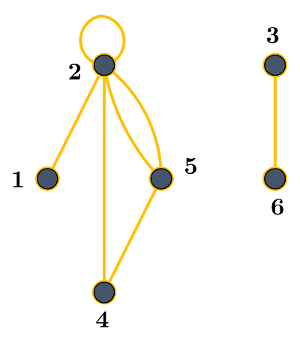
Implémentation en Python
Implémentation avec une matrice d'adjacence
Voici la classe GrapheNoMa qui implémente un graphe simple non orienté, s'appuyant sur une matrice d'adjacence qui n'est autre qu'une liste de listes en Python :
class grapheNoMa:
def __init__(self):
self.matrice = []
self.sommets = []
def est_vide(self):
return len(self.sommets) == 0
def existe_sommet(self, s):
return s in self.sommets
def existe_arete(self, s1, s2):
i = self.sommets.index(s1)
j = self.sommets.index(s2)
return self.matrice[i][j] == 1
def affichage(self):
print(' ', end = '')
for elt in self.sommets:
print(elt, end = ' ')
print()
for i, ligne in enumerate(self.matrice):
print(f'{self.sommets[i]} {ligne}')
print()
def add_sommet(self, s):
assert not self.existe_sommet(s),'Vous ne pouvez pas ajouter un sommet déjà existant'
n = len(self.sommets)
self.sommets.append(s)
self.matrice.append([0 for i in range(n)])
for ligne in self.matrice:
ligne.append(0)
def add_arete(self, s1, s2):
assert not self.existe_arete(s1, s2),'Vous ne pouvez pas ajouter un arête déjà existante'
i = self.sommets.index(s1)
j = self.sommets.index(s2)
self.matrice[i][j] = self.matrice[j][i] = 1
def rem_sommet(self, s):
assert self.existe_sommet(s),"Vous ne pouvez pas supprimer un sommet qui n'existe pas"
n = self.sommets.index(s)
self.sommets.remove(s)
for ligne in self.matrice:
del ligne[n]
del self.matrice[n]
def rem_arete(self, s1, s2):
assert self.existe_arete(s1, s2),"Vous ne pouvez pas supprimer une arête qui n'existe pas"
i = self.sommets.index(s1)
j = self.sommets.index(s2)
self.matrice[i][j] = self.matrice[j][i] = 0
Exercice 3 ⭐⭐
Coder la méthode voisins(s) de la classe grapheNoMa qui retourne la liste des voisins d'un sommet s du graphe.
Exercice 4 ⭐⭐
En vous inspirant de ce qui vient d'être fait, proposer un nouveau type abstrait graphe orienté (pour lequel on donnera les opérations de base) et son implémentation par une matrice d'adjacence sous forme d'une classe grapheOMa.
Inconvénient de cette structure
Comme cela a été évoqué précédemment, la dimension de la matrice est égale au carré du nombre de sommets (\(\,n×n\)), ce qui peut représenter un important espace en mémoire.
Pour obtenir les voisins d’un sommet, il faut utiliser une fonction dont le coût est d’ordre \(\,\mathcal{O}(n\)\()\).
Implémentation par un dictionnaire d'adjacence
Comme nous l'avons vu, un graphe peut être représenté par une liste de successeurs. Cette représentation peut être implémentée efficacement avec un dictionnaire. Chaque sommet s sera donc une clé du dictionnaire, et la liste des sommets adjacents à s sera la valeur de cette clé.
Voici la classe incomplète GrapheNoLs qui implémente un graphe simple non orienté, s'appuyant sur une liste d'adjacence :
class grapheNoLs:
def __init__(self):
""" Initialise le graphe à vide. """
self.graphe = {}
def affichage(self):
"""Affiche le graphe sous forme de listes d'adjacences. """
for sommet in sorted(self.graphe.keys()):
print (sommet, " --> ",self.graphe[sommet])
def voisins(self, s):
assert self.existe_sommet(s), "Ce sommet n'existe pas"
return self.graphe[s]
Remarque
L’obtention des voisins d’un sommet est cette fois-ci une opération en temps constant.
Exercice 5 ⭐⭐⭐
Coder en Python les méthodes suivantes de la classe grapheNoLs :
est_vide()qui retourneTruesi le graphe est vide,Falsesinon.add_sommet(s)qui ajoute le sommetsau graphe.existe_sommet(s)qui teste si le sommetsexiste.add_arete(s1, s2)qui ajoute une arête entre les sommetss1ets2.existe_arete(s1, s2)qui teste si l'arête entre les sommetss1ets2existe.rem_sommet(s)qui supprime le sommets.rem_arete(s1, s2)qui supprime l'arête entre les sommetss1ets2.
Exercice 6 ⭐⭐⭐
En vous inspirant de ce qui vient d'être fait, proposer un nouveau type abstrait graphe orienté (pour lequel on donnera les opérations de base) et son implémentation par un dictionnaire d'adjacence sous forme d'une classe grapheOLs.
Passage d'une représentation à l'autre
Les deux implémentations sont totalement équivalentes et on peut passer de l'une à l'autre simplement en énumérant les sommets et les voisins depuis une représentation tout en construisant l'autre représentation.
Exercice 7 ⭐⭐⭐
- Ecrire la fonction
ma_to_ls(gma)ayant pour argument un graphe non orienté représenté par une matrice d'adjacence et qui renvoie ce même graphe représenté par un dictionnaire d'adjacence. - Ecrire la fonction
ls_to_ma(gls)ayant pour argument un graphe non orienté représenté par un dictionnaire d'adjacence et qui renvoie ce même graphe représenté par une matrice d'adjacence.